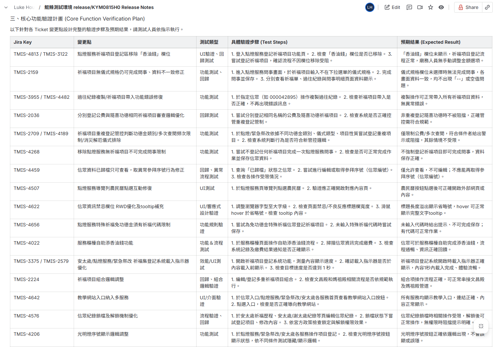

n8n + AI 自動生成 Release Notes
將繁瑣的版更資訊轉化為 QA 的高效測試武器！此工作流自動化生成精準、聚焦的 Release Notes，讓團隊在版更後的第一時間，就能洞悉全局、秒懂重點。
The Challenge
「版更後 QA 需面對數十張 Jira Tickets，人工判讀變更內容並定義測試範圍極為耗時，且容易因資訊疲勞而遺漏高風險的邊際案例。」
The Solution
「開發 AI 驅動的 Release Notes 生成器。自動抓取 Jira 資料，利用 LLM 歸納版本重點並生成『QA 驗證清單』，最後自動發布至 Confluence，將測試準備時間縮短 90%。」
挑戰與解決方案
版本發布後，QA 團隊總是面臨資訊洪流的挑戰：數十甚至上百張 Jira Ticket 如雪片般飛來，如何快速消化、找出關鍵變動、定義測試範圍？過去，這是一個耗費大量時間與心力的手動過程，不僅效率低落，更容易遺漏高風險項目。
為了解決此痛點，我設計了這套 AI 自動化流程，將耗時的資訊整理工作轉化為幾分鐘內即可完成的自動化任務。它能自動從 Jira 抓取資訊、分析內容，並生成一份專為 QA 量身打造的 Release Notes，讓團隊能將寶貴的時間專注於更高價值的測試策略規劃與執行。
核心功能
- AI 高度總結，秒懂版本全局: 透過 AI 分析，將海量 Tickets 濃縮成精華摘要，讓 QA 迅速掌握版本的核心變動與影響範圍。
- 單點聚焦，快速掌握 Ticket 來龍去脈: 針對單一 Ticket，自動整理描述、留言與開發紀錄，並生成摘要，省去來回爬文的時間。
- 智能生成測試重點，加速驗證過程: AI 會根據 Ticket 內容與屬性，智能建議測試重點與驗證清單，輔助 QA 設計測試案例，確保覆蓋率。
- 無縫整合 Confluence，資訊同步零時差: 自動將生成後的 Release Notes 發布到團隊的 Confluence 空間，確保資訊同步，方便所有成員隨時查閱。
成果展示
以下為此工作流的實際運行截圖（為保護隱私，內容已經過 Mock Data 處理）：
n8n 整體工作流
整個自動化流程的鳥瞰圖，展示了從抓取 Jira Ticket 到最終發布至 Confluence 的完整步驟。
產出成果：版本說明及異動歸納摘要
AI 自動生成的版本摘要，清晰歸納了新功能、優化項目與錯誤修復，讓團隊成員能快速掌握版本重點。

產出成果：詳細 Ticket 列表與 AI 摘要
每一張 Ticket 都附有 AI 生成的摘要，點出其核心內容與價值，大幅節省 QA 閱讀與理解的時間。
產出成果：給 QA 的驗證要點
AI 根據 Ticket 內容智能建議的測試重點，作為 QA 進行回歸測試的基礎，有效提升測試效率與覆蓋廣度。
為團隊帶來的價值
-
釋放 QA 生產力，創造更高價值 將 QA 從繁瑣的資訊整理中解放，平均每次版更可節省數小時，讓他們能專注於探索性測試、自動化腳本開發等更有創造性的任務。
-
賦能 QA，主導測試策略 從被動接收資訊，轉為主動分析與評估風險。QA 能在第一時間識別高風險變更，規劃更有效的測試策略，成為品質的關鍵守門員。
-
提升團隊溝通效率 產出的 Release Notes 清晰易懂，不僅幫助 QA，也讓 PM、開發者能快速了解版本變動，降低溝通成本，加速協作。
-
加速回歸測試，縮短上線週期 透過 AI 產生的精準測試重點，QA 能在有限時間內完成更全面的回歸測試，有效縮短整體測試週期，加速產品上線流程。